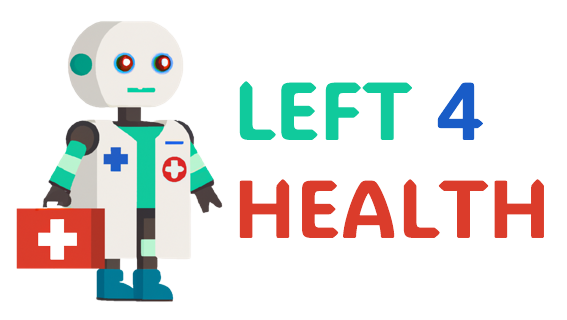

<div class="home">
  <div class="header">
    
    <h1 class="title">Sistema Pericial</h1>
    <p class="description" *ngIf="!selectedTool">Selecione um dos tipos de diagnóstico:</p>
    <div class="option-buttons">
      <div class="button-container" *ngIf="!selectedTool">
        <div class="button-with-border" (click)="selectTool('prolog')">Prolog</div>
        <div class="button-with-border" (click)="selectTool('drools')">Drools</div>
      </div>
      <div class="button-container" *ngIf="selectedTool">
        <div class="button-with-border" (click)="redirectToQuestionnaire()">Fazer o Questionário</div>
      </div>
    </div>
  </div>

  <div class="footer">
    <p class="visit-text">Visite-nos:</p>
    <a href="https://left-4-health.wordpress.com/" class="visit-link" target="_blank">Clique aqui</a>
  </div>
</div>


